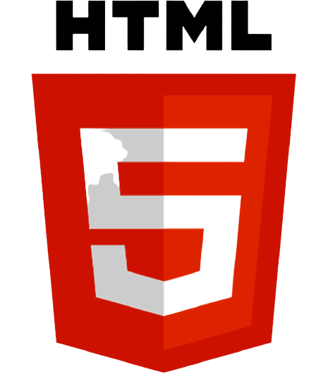
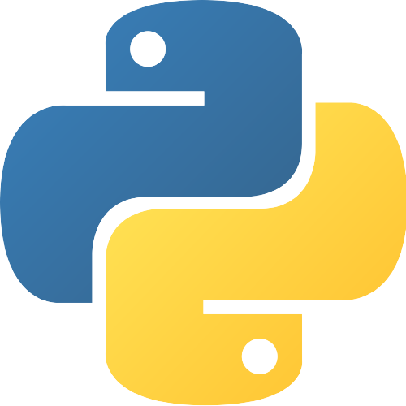
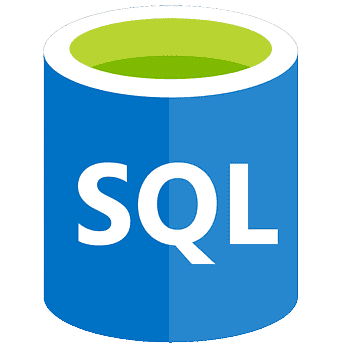
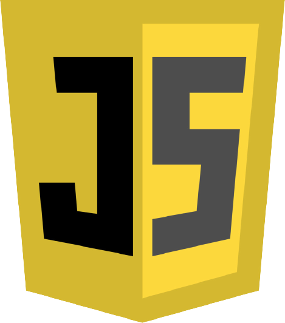
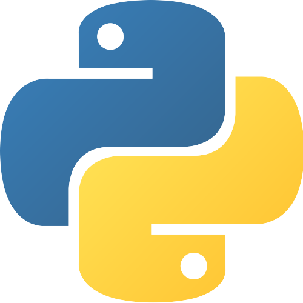
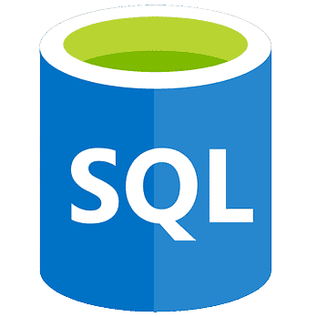
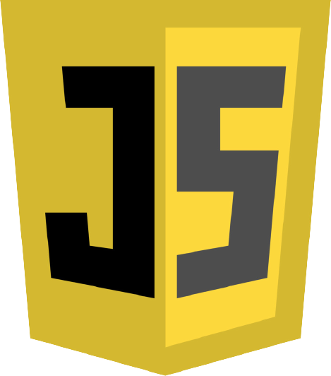
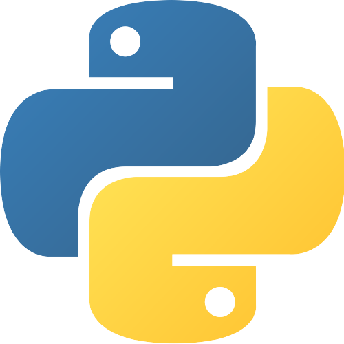
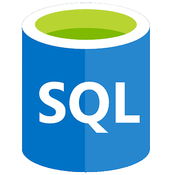
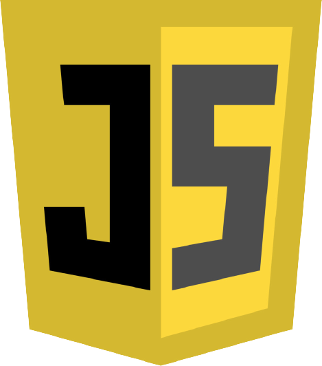

Recent skills I learned during my journey at SAIT are the listed images below and more. Although my experience with some of the languages and frameworks may be limited, my willingness to learn and expand my knowledge are immense. I am really confident in HTML and CSS which is something I enjoy a lot. I enjoy web development a lot and have a true passion. C# and Java are two languages I want to continue to learn more and eventually become extremely confident with since they are so powerful. All future projects and current projects can be seen on my github which is linked on my contact page for those interested and wanting to stay up to date with current and future projects. There will be more updates done to this page so stay tuned for further development


 







